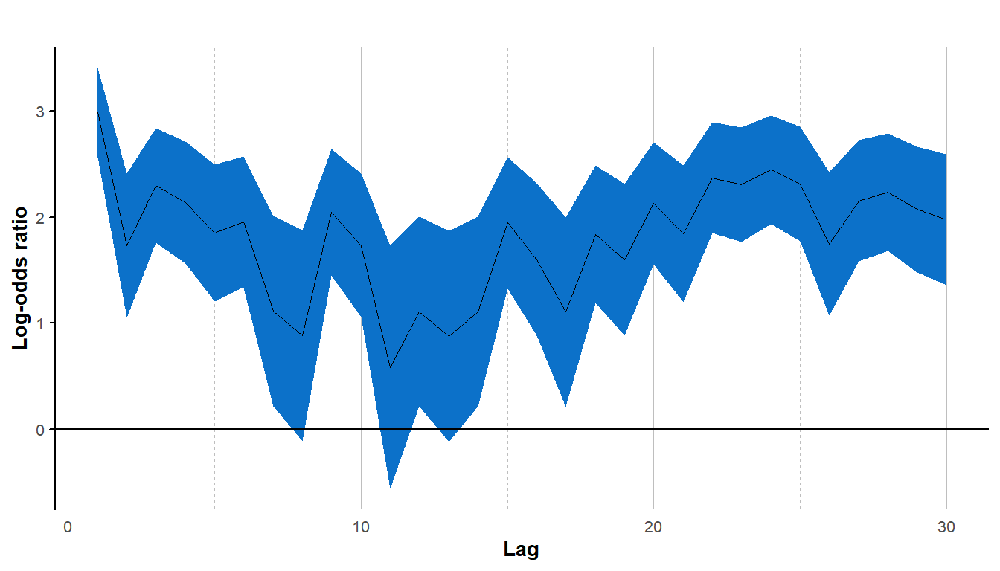
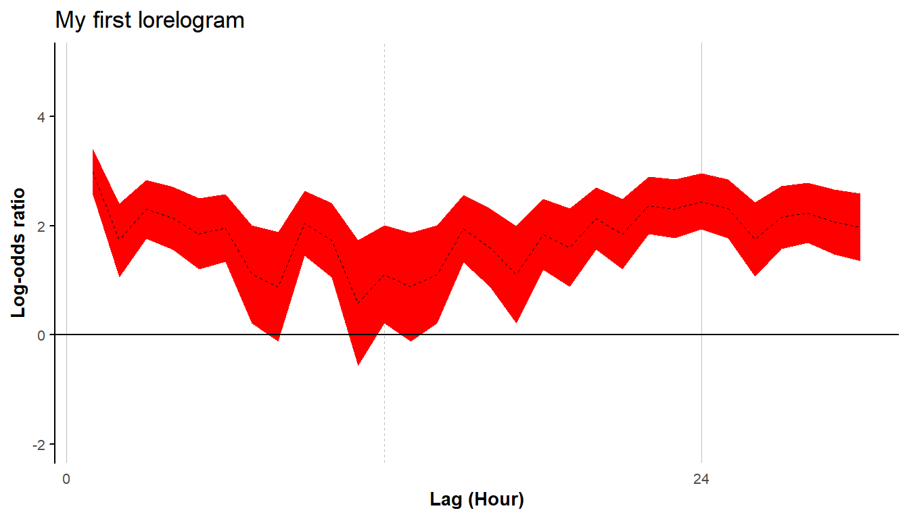
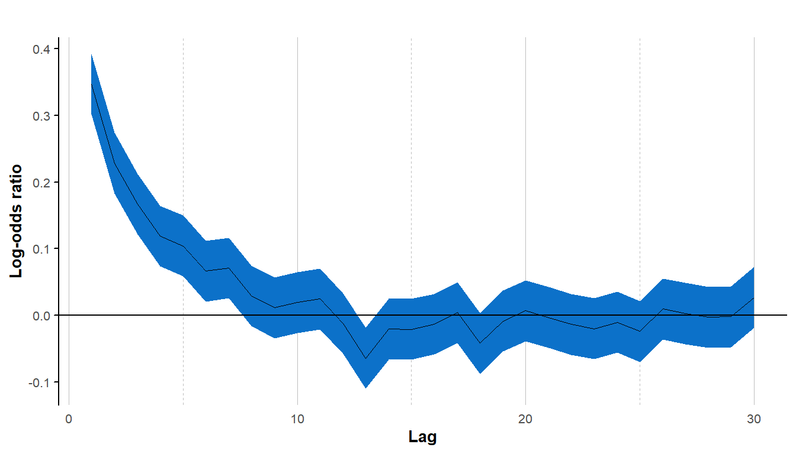
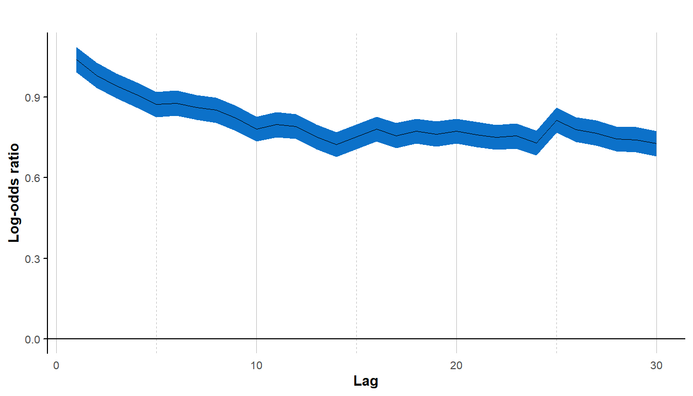
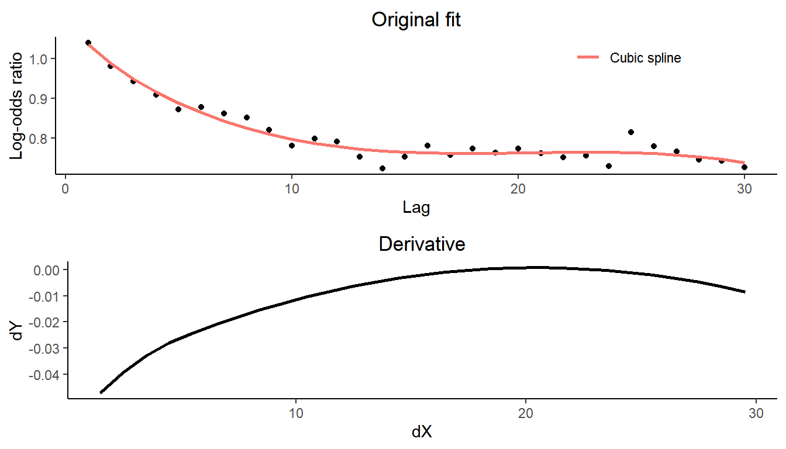
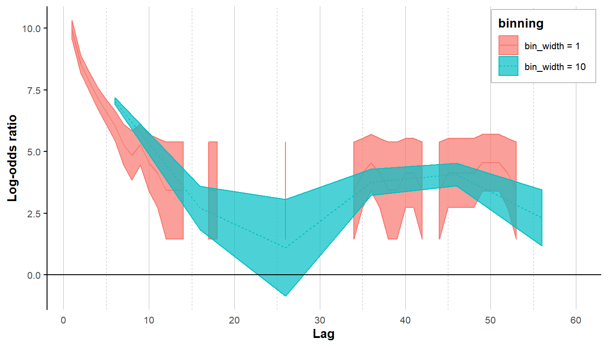
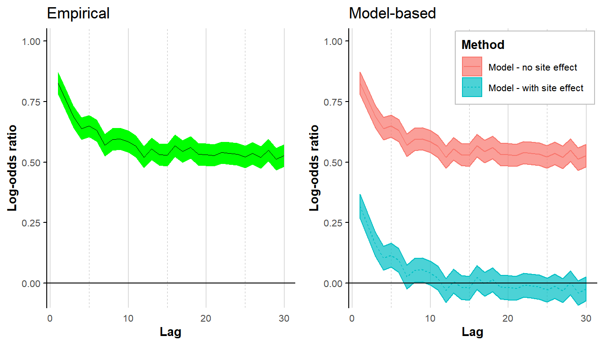

Lorelogram: describing correlation structure in binary data
18 October 2019
Source:vignettes/lorelogram.Rmd
lorelogram.Rmd1. Introduction
The lorelogram package provides functions to explore and graphically describe correlation structures in binary data. The package is available on GitHub and can be downloaded in R (R Core Team 2018) via:
if (!require("devtools")) install.packages("devtools",
repos = "http://cran.us.r-project.org",
dependencies = "Imports")
devtools::install_github("FabiolaIannarilli/lorelogram") The lorelogram is a tool to identify dependency structure in binary data. In Iannarilli et al. (2019), we showed how it can be used to guide data aggregation efforts to facilitate independence, or alternatively, to inform appropriate structures for modelling correlated data. The method was originally developed by Heagerty and Zeger (1998) to describe dependence structures in longitudinal categorical data using marginal pairwise conditional log-odds ratios. For details on the method and examples of applications in ecological studies see Iannarilli et al. (2019). Here we focus on guiding new users on how to apply the lorelogram to their own dataset.
The main function in the lorelogram package is called lorelogram. This function allows users to calculate log-odds ratio at each spatial or temporal lag up to a maximum interval between subsequent observations. It also returns a plot of the log-odds ratio estimates versus lag, the lorelogram plot, that graphically represents how the correlation changes with the increase of the spatial or temporal lag between observations.
We use the data associated with the package to provide a first example. This dataset consists of detection/nondetection data of gray fox (Urocyon cinereoargenteus) collected using camera traps at 100 locations in Northern Minnesota during fall 2016. We provided details on the structure of these data in the Data format section. Further details on the sampling protocol and on all the data provided within the package are available in the READme.txt file at https://drive.google.com/drive/u/0/folders/12cx59tZvPndOWqH7TG6XKGPFd6HyBjMR through the University of Minnesota Data Repository DRUM. We load the data and apply the lorelogram function.

#> # A tibble: 30 x 4
#> Lag LORs U_95_CI L_95_CI
#> <dbl> <dbl> <dbl> <dbl>
#> 1 1 2.99 3.41 2.57
#> 2 2 1.73 2.41 1.05
#> 3 3 2.30 2.84 1.76
#> 4 4 2.14 2.71 1.57
#> 5 5 1.85 2.50 1.21
#> 6 6 1.95 2.57 1.34
#> 7 7 1.12 2.01 0.221
#> 8 8 0.883 1.88 -0.113
#> 9 9 2.05 2.64 1.45
#> 10 10 1.73 2.41 1.06
#> # ... with 20 more rowsThe lorelogram function returns a plot of the estimates and a data frame containing the estimated average log-odds ratio values and associate 95% confidence interval at each lag upon to a maximum defined by the argument max_lag. The data frame component of the output can be assigned to an object that can be later used as the argument for the function lor_plot. This second function allows users to save the plot as a jpeg file in a directory of their choice and have more control over plot features. For example, using lor_plot we can assign a title to the plot, change the default label for the x axis and the linetype, specify the color of the 95% confidence interval, the distance between tick marks along the x axis, and the range of the y axis.
LORs <- lorelogram(GrayFox_Hour, plot_LOR = FALSE)
lor_plot(LORs, save_LOR_plot = FALSE, title = "My first lorelogram",
x_axis_title = "Lag (Hour)", colour="red", linetype = "dashed",
x_break = 24, ylim = c(-2,5))
2. How to apply the lorelogram
In this section we are going to illustrate how to apply the lorelogram function to new datasets, discuss how to interpret the lorelogram, briefly introduce an approach that can account for site-to-site variability while exploring serial dependence, demonstrate the use of binnning, and show how to determine time to independence using a derivative-based approach.
2.1 Data format
The lorelogram function accepts both wide and long data formats. Wide format data must contain a sampling unit identifier in the first column and the binary data in the following columns, one column for each sampling occasion. Each row must represent a sampling unit. In the wide format, it is important to order the columns from first to last sampling occasion (with data for the first replicate contained in the second column, second replicate in third column, and so on) because the order of the columns will be used by the function to define the spatial or temporal interval between two outcomes within a sampling unit.
GrayFox_Hour[24:28, 1:31]
#> X o1 o2 o3 o4 o5 o6 o7 o8 o9 o10 o11 o12 o13 o14 o15 o16 o17 o18 o19
#> 24 5D 0 0 0 0 0 0 0 0 0 0 0 0 0 0 0 0 0 0 0
#> 25 5E 0 0 0 0 0 0 0 0 0 0 0 0 0 0 0 0 0 0 0
#> 26 6A NA NA NA NA NA NA NA NA NA NA NA NA NA NA NA NA NA NA NA
#> 27 6B NA NA NA NA NA NA NA NA NA NA NA NA NA NA NA NA NA NA NA
#> 28 6C NA NA NA NA NA NA NA NA NA NA NA NA NA NA NA NA NA NA NA
#> o20 o21 o22 o23 o24 o25 o26 o27 o28 o29 o30
#> 24 0 0 0 0 0 0 0 0 0 0 0
#> 25 0 0 0 0 0 0 0 0 0 0 0
#> 26 NA NA NA NA NA NA NA NA NA NA NA
#> 27 NA NA NA NA NA 0 0 0 0 0 0
#> 28 NA NA NA NA NA NA NA NA NA NA NAIn this subset of the GrayFox_Hour data, each column after the first records a binary event (1 when the species was detected and 0 otherwise). The subset of the data shown here have been collected at five sites during the first 30 hours of sampling. Note that the columns are ordered from hour 1 (column ‘o1’) to hour 30 (column ‘o30’). NAs indicate occasions in which the camera trap at a certain site was not yet active (e.g., sites 6A and 6C); at site 6B the camera trap was deployed and activated at the 25th hour.
When data are supplied in the long format, the dataset must contain three columns organized in the order described here. The first column contains the sampling unit identifier, the second contains numeric values indicating the time or space of each replicate, the last column contains the binary outcome.
data("GrayFox_Hour_long")
GrayFox_Hour_long[2501:2520,]
#> id time y
#> 2501 1A 26 NA
#> 2502 1B 26 NA
#> 2503 1C 26 NA
#> 2504 1D 26 0
#> 2505 1E 26 NA
#> 2506 2A 26 NA
#> 2507 2B 26 NA
#> 2508 2C 26 0
#> 2509 2D 26 0
#> 2510 2E 26 0
#> 2511 3A 26 0
#> 2512 3B 26 NA
#> 2513 3C 26 0
#> 2514 3D 26 NA
#> 2515 3E 26 NA
#> 2516 4A 26 NA
#> 2517 4B 26 NA
#> 2518 4C 26 NA
#> 2519 4D 26 NA
#> 2520 4E 26 NAThese data are a subset of the same gray fox data used in the previous examples but organized in the long format and show the detection/nondetection outcomes (column ‘y’) at twenty different camera sites (column ‘id’) at the 26th hour of sampling (column ‘time’).
Sites at which there are no detection events (i.e. no 1’s) for the whole sampling period are automatically removed from the dataset because they do not contain information on correlation among detections. The lorelogram function handles missing values (i.e. NAs) in the data; for each sampling unit, these values will be removed before creating the pairwise detection histories at the different intervals.
2.2 Interpreting the lorelogram
Lorelogram plots provide a graphical description of how the correlation in the data changes with the increase of the interval between sampling occasions. Their interpretation varies depending on the context in which they are applied (e.g., spatial versus temporal dependency). Here we provide some general guidance on how to interpret the lorelogram by applying the function to simulated data. In general, log-odds ratio estimates equal to zero suggest no correlation among outcomes x-units apart. Positive or negative values indicate instead positive or negative correlation, respectively.
We simulate data for 1000 sampling occasions at each of 30 sites, with constant detection for the entire study period. An autocorrelation component of first order (i.e. AR1) determines a short-term dependency in the data, that is, outcomes few lags apart are strongly correlated. We simulate the data and calculate the lorelogram.
# Prepare to simulate
set.seed(129)
M <- 30 # Number of sites
J <- 1000 # Number of occasions
y <- matrix(NA, nrow=M, ncol=J) # to store obs values
time <- matrix(data=seq(1,J,1), nrow=M, ncol=J, byrow=TRUE) # Create covariate time
b0<-rep(0, J) # Stationary mean
# Simulate ar1 errors
rho<-0.75 # autocorrelation parameter on logit scale
eps<-matrix(NA, nrow=M, ncol=J) # to hold errors
for(i in 1:M){ #autocorrelation
eps[i,1:J]<- t(arima.sim(n =J, list(ar = rho), innov=rnorm(J, mean = 0, sd=0.5)))
}
# Determine ps
p <- inv.logit( matrix(b0, nrow=M, ncol=J, byrow=TRUE) + eps)
# Simulate detection process
for(j in 1:J){
y[,j] <- rbinom(M, 1, p[,j])
}
# create and add ID column to the data and prepare the data
y <- as.data.frame(cbind(id=paste("S", seq(1,M,1), sep=""),y))
colnames(y) <- c("id", paste0("R", seq(1, J, 1), sep=""))
Stat_data <- y
# Applying lorelogram
LOR_Stat_data <- lorelogram(Stat_data, max_lag = 30)
#> Warning in lorelogram(Stat_data, max_lag = 30): Second to last columns in
#> data were converted from factor to numeric
The lorelogram has large positive values for short-time lags, but quickly decreases to 0 for observations \(\ge\) 10 units apart. Thus, we conclude that observations exhibit short-term serial dependence and that observations > 10 units apart are approximately independent.
In the second example, we again simulate observations with serial dependence, but we allow the mean to be non-stationary.
# Prepare to simulate
set.seed(129)
M <- 30 # Number of sites
J <- 1000 # Number of occasions
y <- matrix(NA, nrow=M, ncol=J) # to store obs values
time <- matrix(data=seq(1,J,1), nrow=M, ncol=J, byrow=TRUE) # Create covariate time
b0<-2-0.004*time[1,] # NON Stationary mean
# Simulate ar1 errors
rho<-0.75 # autocorrelation parameter on logit scale
eps<-matrix(NA, nrow=M, ncol=J) # to hold errors
for(i in 1:M){ #autocorrelation
eps[i,1:J]<- t(arima.sim(n =J, list(ar = rho), innov=rnorm(J, mean = 0, sd=0.5)))
}
# Determine ps
p <- inv.logit( matrix(b0, nrow=M, ncol=J, byrow=TRUE) + eps)
# Simulate detection process
for(j in 1:J){
y[,j] <- rbinom(M, 1, p[,j])
}
# create and add ID column to the data and prepare the data
y <- as.data.frame(cbind(id=paste("S", seq(1,M,1), sep=""),y))
colnames(y) <- c("id", paste0("R", seq(1, J, 1), sep=""))
NonStat_data <- y
# Applying lorelogram
LOR_NonStat_data <- lorelogram(NonStat_data, max_lag = 30)
#> Warning in lorelogram(NonStat_data, max_lag = 30): Second to last columns
#> in data were converted from factor to numeric
The lorelogram again decreases for the first 10 time lags, but this time the curve levels off at a log-odds ratio value higher than zero. In this case, the non-stationary mean creates a dependence that does not decrease with time between observations. For more discussion and other examples see Iannarilli et al. (2019) (fig. 2 and S1-2 in Appendix).
Methods to account for this residual correlation exists (see Iannarilli et al. (2019) section 3 for a list), but these methods are computationally demanding and not yet easy to implement in R. Site-to-site variability, a common source of correlation in ecological data, can be controlled following the approach described in section 2.6.
2.3 How the lorelogram function works
The lorelogram requires binary data for 1 or more sampling units (e.g., camera sites). The lorelogram function first removes sampling units that have no 1’s, and, if necessary, converts the binary data from wide to long format (Fig. 1, step A). Then, for each sampling unit, it creates pairs of outcomes \(y_{i}\) and \(y_{i+\Delta t}\) for all the possible combination of replicates that are between 1 and ≤ max_lag units apart (Fig. 1, step B). The combinations are obtained using the function combinations in package arrangements (Lai 2018), whereas the pairing is performed using the nest and unnest functions in tidyverse (Wickham 2017). For each discrete interval (i.e. 1 through max_lag), the function tabulates the number of occurrences of each pairwise detection history ‘11’, ‘10’, ‘01’, or ‘00’ within a sampling unit. These detection histories are then pooled across sampling units (Fig. 1, step C). In the empirical lorelogram, these values are used to calculate the average log-odds ratio value at each interval as: \[LOR=\log{\frac{n_{11}n_{00}}{n_{01}n_{01}}}.\]
The 95% confidence interval at each lag is calculated as: \[95\% \mbox{ } CI = LOR\pm1.96*\sqrt{\frac{1}{n_{11}}+\frac{1}{n_{00}}+\frac{1}{n_{10}}+\frac{1}{n_{11}}}.\]
![Figure 1. Conceptual diagram illustrating how the `lorelogram` function works. This example demonstrates how camera trap data are converted from detection histories to the counts used to calculate the lorelogram values (i.e. pairwise log-odds ratios). Detection histories are first converted from wide to long format (A), then the function compiles the outcomes $y_{i}$ and $y_{j}$ as pairwise detections based on all the possible pairwise combinations of time _i_ and _j_ within the maximum time lag ($\Delta t$) considered (B). Finally, for each value of $\Delta t$, the function counts the number of 00, 01, 10, 00 detection histories, pooling pairwise detections across all sites (C).](fig_Data_formatting_cropped.jpg)
Figure 1. Conceptual diagram illustrating how the lorelogram function works. This example demonstrates how camera trap data are converted from detection histories to the counts used to calculate the lorelogram values (i.e. pairwise log-odds ratios). Detection histories are first converted from wide to long format (A), then the function compiles the outcomes \(y_{i}\) and \(y_{j}\) as pairwise detections based on all the possible pairwise combinations of time i and j within the maximum time lag (\(\Delta t\)) considered (B). Finally, for each value of \(\Delta t\), the function counts the number of 00, 01, 10, 00 detection histories, pooling pairwise detections across all sites (C).
2.4 Identify the minimum interval to approximate independence
A visual inspection of the lorelogram plot is often sufficient to identify the minimum lag at which serial dependence is no longer present. However, the lorelogram package provides the lor_lag_to_indep function to support a more rigorous selection of this threshold. This function requires a data frame containing the output of the lorelogram function. To illustrate how lor_lag_to_indep works, we use the log-odds ratios stored in the object named LOR_NonStat_data and estimated by lorelogram applied to the non-stationary data with short-term dependency structure simulated in section 2.2. We identify the lag at which serial dependence is approximately 0 using the lor_lag_to_indep function.

#> 18
#> 17In a first step, the lor_lag_to_indep function fits a smoothing cubic spline to the log-odds ratios estimated by the lorelogram function. Then, it calculates the first derivative of the spline curve and identifies the lag at which the derivative is closest to 0 (in absolute value).
2.5 Binning data
The lorelogram is undefined whenever \(n_{01}\) or \(n_{10}\) is 0 and it is equal to negative infinitiy when either \(n_{11}\) or \(n_{00}\) is 0. A common strategy to avoid this problem is to apply the alternative formulation \[LOR=\log{\frac{(n_{11}+0.5)(n_{00}+0.5)}{(n_{10}+0.5)(n_{01}+0.5)}}\] (Agresti 1990, 54–55). This formula is used when the lor_adj argument in lorelogram function is set equal to “TRUE”.
Binning the data offers another solution when data are sparse. The choice of bin width represents a bias-variance tradeoff (large bins reduce variance at the cost of introducing bias). See e.g., https://support.esri.com/en/technical-article/000004923. Our main goal here, when binning data, is to reduce gaps in the lorelogram when detections are sparse. Using the bin_width argument in lorelogram users can test several binning values and choose the one that they think is most appropriate for their dataset. To illustrate the process we use the gray fox data, this time organized at the minute scale (instead of hour scale), and select only sites where salmon oil was applied as a lure.
We compare results obtained without binning and results obtained using a binning value of 10. The plots illustrate that binning the data is not only helpful to fill in the gaps in the lorelogram, but it also helps in smoothing the curve and reducing the uncertainty in the estimates.
#' Load data
data(GrayFox_minute_lureSal)
# bin_width = 1 corresponds to no binning
tic()
LORs_no_bin <- lorelogram(GrayFox_minute_lureSal, max_lag = 60, bin_width = 1, plot_LOR = FALSE)
toc()
#> 752.5 sec elapsed
# bin_width = 10
tic()
LORs_10_bin <- lorelogram(GrayFox_minute_lureSal, max_lag = 60, bin_width = 10, plot_LOR = FALSE)
toc()
#> 747.44 sec elapsed
LORs_no_bin$binning <- "bin_width = 1"
LORs_10_bin$binning <- "bin_width = 10"
LORs <- rbind(LORs_no_bin, LORs_10_bin)
LORs %>% mutate(binning = factor(binning, levels = c("bin_width = 1", "bin_width = 10"))) %>%
ggplot(., aes(x = Lag, y = LORs))+
geom_line(aes(linetype = binning, color = binning), size = 0.5)+
geom_ribbon(aes(ymin=L_95_CI, ymax=U_95_CI, color = binning, fill = binning), alpha=0.7)+
geom_hline(yintercept = 0) +
labs(y = "Log-odds ratio") +
ggplot2::theme_minimal() +
ggplot2::theme(legend.justification = c(1, 1), legend.position = c(0.99,0.99),
legend.title = element_text(size=10, face = "bold"),
legend.text = element_text(size=8),
legend.background = element_rect(fill = "white", color = "grey"),
legend.direction = "vertical",
axis.line.y = ggplot2::element_line(colour = 'black', linetype = 'solid'),
axis.ticks.y = ggplot2::element_line(colour = 'black', linetype = 'solid'),
axis.text = ggplot2::element_text(size=8),
axis.title = ggplot2::element_text(size=10,face="bold"),
panel.grid.minor.y = ggplot2::element_blank(),
panel.grid.major.y = ggplot2::element_blank(),
panel.grid.major.x = ggplot2::element_line(colour = 'grey', linetype = 'solid',
size=0.25),
panel.grid.minor.x = ggplot2::element_line(colour = 'grey', linetype = 'dashed',
size=0.25))+
ggplot2::scale_x_continuous(breaks=seq(0,max(LORs$Lag),10), labels=seq(0,max(LORs$Lag),10))
#> Warning: Removed 7 rows containing missing values (geom_path).
2.6 Accounting for site-to-site variability
A common source of correlation in ecological studies is due to variability among sites (i.e. sampling units). Similar to the non-stationary example in section 2.2, site-to-site variability will cause the lorelogram to level off at a log-odds ratio higher than zero. Interestingly, we can adjust for this dependence using a generalized linear mixed model approach that includes sampling units as a random effect. Thus, we provide the option to adopt this method in lorelogram by setting the argument lor_type equal to model-based and the argument id_rand_eff equal to TRUE. We illustrate the process using simulated data containing a short term correlation structure (that is targeted by the lorelogram) and a non-serial component due to site-to-site variability.
# Prepare to simulate
set.seed(129)
M <- 30 # Number of sites
J <- 1000 # Number of occasions
y <- matrix(NA, nrow=M, ncol=J) # to store obs values
time <- matrix(data=seq(1,J,1), nrow=M, ncol=J, byrow=TRUE) # Create covariate time
b0<-rep(0, J) # Stationary mean
# Simulate site-to-site variability
sdtau<-0.8 # site-level variability
taus<-rnorm(M, 0, sdtau)
# Simulate ar1 errors (pick whichever is appropriate)
rho<-0.75 # autocorrelation parameter on logit scale
eps<-matrix(NA, nrow=M, ncol=J) # to hold errors
for(i in 1:M){ #autocorrelation
eps[i,1:J]<- t(arima.sim(n =J, list(ar = rho), innov=rnorm(J, mean = 0, sd=0.5)))
}
# Determine ps
p <- inv.logit(matrix(b0, nrow=M, ncol=J, byrow=TRUE) + matrix(taus, nrow=M, ncol=J, byrow=FALSE)
+ eps)
# Simulate detection process
for(j in 1:J){
y[,j] <- rbinom(M, 1, p[,j])
}
# create and add ID column to the data and prepare the data
y <- as.data.frame(cbind(id=paste("S", seq(1,M,1), sep=""),y))
colnames(y) <- c("id", paste0("R", seq(1, J, 1), sep=""))
Site_var_data <- y
# Applying empirical lorelogram
tic()
LOR_empirical <- lorelogram(Site_var_data <- y, max_lag = 30, lor_type = "empirical", plot_LOR = FALSE)
#> Warning in lorelogram(Site_var_data <- y, max_lag = 30, lor_type =
#> "empirical", : Second to last columns in data were converted from factor to
#> numeric
toc()
#> 7.09 sec elapsed
plot_emp <- lor_plot(LOR_empirical, colour = "green", title = "Empirical", ylim = c(-0.05,1))
# Applying model-based lorelogram without random effect
tic()
LOR_mod_noRE <- lorelogram(Site_var_data <- y, max_lag = 30, lor_type = "model-based",
id_rand_eff = FALSE, plot_LOR = FALSE)
#> Warning in lorelogram(Site_var_data <- y, max_lag = 30, lor_type = "model-
#> based", : Second to last columns in data were converted from factor to
#> numeric
toc()
#> 73.12 sec elapsed
# Applying model-based lorelogram without random effect
tic()
LOR_mod_RE <- lorelogram(Site_var_data <- y, max_lag = 30, lor_type = "model-based",
id_rand_eff = TRUE, plot_LOR = FALSE)
#> Warning in lorelogram(Site_var_data <- y, max_lag = 30, lor_type = "model-
#> based", : Second to last columns in data were converted from factor to
#> numeric
#> Warning in fitTMB(TMBStruc): Model convergence problem; function evaluation
#> limit reached without convergence (9). See vignette('troubleshooting')
toc()
#> 82.04 sec elapsed
LOR_mod_noRE$Method <- "Model - no site effect"
LOR_mod_RE$Method <- "Model - with site effect"
LORs <- rbind(LOR_mod_noRE, LOR_mod_RE)
plot_mod <- ggplot(LORs, aes(x = Lag, y = LORs))+
geom_line(aes(linetype = Method, color = Method), size = 0.5)+
geom_ribbon(aes(ymin=L_95_CI, ymax=U_95_CI, color = Method, fill = Method), alpha=0.7)+
geom_hline(yintercept = 0) +
labs(y = "Log-odds ratio", title = "Model-based") +
coord_cartesian(ylim = c(-0.05,1)) +
ggplot2::theme_minimal()+
ggplot2::theme(legend.justification = c(1, 1), legend.position = c(0.99,0.99),
legend.title = element_text(size=10, face = "bold"),
legend.text = element_text(size=8),
legend.background = element_rect(fill = "white", color = "grey"),
legend.direction = "vertical",
axis.line.y = ggplot2::element_line(colour = 'black', linetype = 'solid'),
axis.ticks.y = ggplot2::element_line(colour = 'black', linetype = 'solid'),
axis.text = ggplot2::element_text(size=8),
axis.title = ggplot2::element_text(size=10,face="bold"),
panel.grid.minor.y = ggplot2::element_blank(),
panel.grid.major.y = ggplot2::element_blank(),
panel.grid.major.x = ggplot2::element_line(colour = 'grey', linetype = 'solid',
size=0.25),
panel.grid.minor.x = ggplot2::element_line(colour = 'grey', linetype = 'dashed',
size=0.25))+
ggplot2::scale_x_continuous(breaks=seq(0,max(LORs$Lag),10), labels=seq(0,max(LORs$Lag),10))
grid.arrange(plot_emp, plot_mod, ncol = 2)
When estimating the empirical lorelogram, the lorelogram curve levels off at a log-odds ratio value higher than zero, even when data are stationary, due to the site-to-site variability. However, when applying the model-based approach including sampling units as random effect, the correlation due to site-to-site variability is removed.
References
Agresti, Alan. 1990. Categorical data analysis. New York, New York, USA: Wiley.
Heagerty, Patrick J., and Scott L. Zeger. 1998. “Lorelogram: A regression approach to exploring dependence in longitudinal categorical responses.” Journal of the American Statistical Association 93 (441): 150–62. https://doi.org/10.2307/2669612.
Iannarilli, F, Todd W. Arnold, John Erb, and John R. Fieberg. 2019. “Using lorelograms to measure and model correlation in binary data: Applications to ecological studies.” Methods in Ecology and Evolution.
Lai, Randy. 2018. “arrangements: Fast Generators and Iterators for Permutations, Combinations and Partitions.” https://cran.r-project.org/package=arrangements.
R Core Team. 2018. “R: A language and environment for statistical computing.” Vienna, Austria: R Foundation for Statistical Computing. https://www.r-project.org/.
Wickham, Hadley. 2017. “tidyverse: Easily Install and Load the ’Tidyverse’.” https://cran.r-project.org/package=tidyverse.